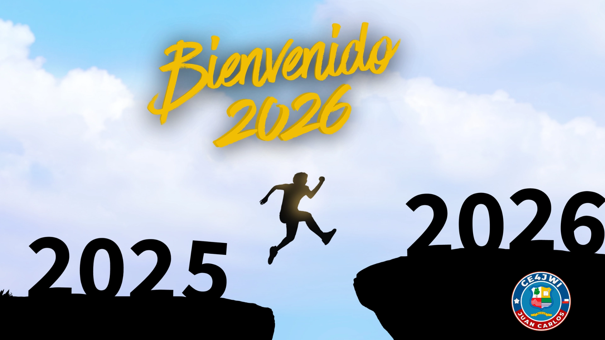

31 de Diciembre 2025

El Año Nuevo 2026 se celebrará el jueves 1 de enero. La festividad comienza en la víspera, la Nochevieja del 31 de diciembre, y es un feriado irrenunciable en Chile.
Para celebrar la llegada del Año Nuevo 2026, estaré activo el 31 de diciembre de 2025 con el indicativo especial XR4MAU.
El objetivo de esta actividad es celebrar la llegada del nuevo año y fomentar la camaradería entre los radioaficionados de todo el mundo.
Invito a todos los radioaficionados a contactarme durante este día especial para intercambiar saludos y buenos deseos para el año que comienza.
Estaré operando en varias bandas y modos para facilitar los contactos con radioaficionados de diferentes regiones.
Espero poder hacer muchos contactos y compartir la alegría de recibir el Año Nuevo 2026 con la comunidad de radioaficionados.
Tradiciones de Nochevieja en Chile
En Chile, recibir el año nuevo es un asunto de familia y de mucha costumbre: las doce uvas a la medianoche, la maleta lista para atraer viajes, el abrazo con quienes uno quiere y las campanadas que anuncian el nuevo ciclo. Muchas ciudades realizan espectáculos de fuegos artificiales y una de las celebraciones más famosas del mundo es la de Valparaíso, que ilumina la bahía cada 1 de enero.
Para muchos, además, es una fecha de propósitos: estrenar calendario, planificar metas y renovar las ganas de seguir adelante.
En radioafición los contactos se registran en hora UTC. Para calcular la hora en Chile continental réstale 4 horas en invierno y 3 en verano, y recuerda que la hora UTC no cambia cuando adelantamos los relojes.
DETALLES DE LA ACTIVIDAD
FECHA Y HORA:
30 al 31 de Diciembre de 2025 (00:00 a 23:59 UTC)
COMO RADIOAFICIONADO REALIZARÉ ESTA ACTIVIDAD A UN SOLO CONTACTO